화면설계서 · 18장
아래 18장은 16:9 지면입니다. 같은 내용의 PDF 는 자료 모음의 내려받기에 있습니다. 화면 이미지는 모두 자체 앱을 캡처한 것이며 submission/tools/capture_screens.py 로 다시 뜰 수 있습니다.
카 이스케이프 · 보조 제출 자료
화면설계서
충전을 기다리는 동안 우리 차를 방탈출 게임으로 바꾸는 가족 협동 앱입니다. 이 문서는 정보 구조, 화면별 동작, 주행과 정차 상태 처리, 화면 규격 12종 대응, 토큰과 접근성 설계를 정리합니다.
2026-11-15 · 팀 0won
기준 환경 Pleos Connect Emulator v2.1.0, Connect-S 17형 2560x1440 160dpi
화면 이미지는 모두 자체 앱 캡처입니다.

설계 원칙
차가 입력 장치이고, 화면은 지금 값과 목표를 보여 줍니다
| 원칙 | 화면에서 지키는 방법 |
|---|---|
| 차가 입력 장치 | 퍼즐은 화면 버튼이 아니라 창문, 독서등, 방향지시등, 열선, 와이퍼, 안전벨트를 움직여 풉니다. 화면에는 지금 값, 목표, 움직일 부품 위치만 둡니다. |
| 정차 중에만 | 기어 P, 속도 0.5km/h 이하, 주행 제한 없음일 때만 진행합니다. 하나라도 어긋나면 화면 전체를 정지 안내로 덮고 터치를 막습니다. |
| 충전 시간에 맞춘 한 화 | 배터리 변화율로 남은 충전 시간을 추정해 그 안에 끝나는 화를 추천합니다. 목표 충전량에 닿는 순간이 엔딩입니다. |
| 원래대로 출발 | 무드등은 끝나면 원래 값으로 되돌립니다. 창문, 열선, 독서등은 앱이 움직이지 않고, 시작 때와 달라진 곳만 엔딩에서 알려 줍니다. |
| 차에 없는 부품은 건너뛰지 않고 바꿈 | 차가 제공하지 않는 입력의 퍼즐은 제공되는 입력의 퍼즐로 바꿉니다. 사용자에게 오류를 보여 주지 않습니다. |
이 문서의 상태 표시
| 구현·테스트 | 코드에 있고 자동 테스트가 통과 |
| 에뮬레이터 검증 | Pleos Connect Emulator v2.1.0 에서 직접 조작해 확인(프로젝트 기록 2026-10-23, 10-25) |
| 구현·실기 미검증 | 코드에 있으나 에뮬레이터에 조작 카드가 없거나 아직 확인하지 않음 |
| 웹 모사 | 웹 체험판에서 가상 차량 패널로 흉내 낸 것 |
| 계획 | 아직 만들지 않음 |
실차에서는 아직 실행하지 않았습니다. 검증 범위의 상세는 근거와 구현 범위 문서에 있습니다.
정보 구조
화면은 10종, 한 화는 타이틀에서 엔딩까지 한 줄로 흐릅니다
- 앱 진입
- S01타이틀: 충전 링, 시작, 오늘의 금고, 기록과 배지, 충전 일지
- S09마이 차고: 도색, 휠, 스티커, 테마, 주행 모드별 테마
- S10출발 금고 카드: 갈림길, 주차 암호, 다시 탔어요
- N화 준비 카드: 충전구가 열리면 다음 화를 제안
- S02에피소드 매칭: 추천 1개와 시즌 1의 4개 화
- S03인트로: 지난 화 한 줄, 이번 화 이야기
- S04퍼즐(화마다 4~6개) 과 S05해제를 번갈아 진행
- S06엔딩: 충전 대기, 최종(별점, 새 기록, 원래대로 출발)
- S01타이틀: 충전 링, 시작, 오늘의 금고, 기록과 배지, 충전 일지
- 어느 화면 위에나 겹치는 화면
- S07주행 정지: 주행이 감지되면 전체를 덮음
- S08문 열림 정지: 인트로, 퍼즐, 해제 중 문이 열리면
- 시연 패널: debug 빌드 전용, release 에는 없음
| ID | 화면 | 상태값 | 구현 위치(ui/) | 스냅샷 |
|---|---|---|---|---|
| S01 | 타이틀 | TITLE | Screens.kt TitleScreen | 7종 |
| S02 | 에피소드 매칭 | MATCHING | MatchingScreen | 2종 |
| S03 | 인트로 | INTRO | IntroScreen | 2종 |
| S04 | 퍼즐 | PUZZLE | PuzzleScreen, Visuals.kt | 13종 |
| S05 | 해제 | SOLVED | SolvedScreen | 1종 |
| S06 | 엔딩 | ENDING | EndingScreen | 5종 |
| S07 | 주행 정지 | PAUSED_DRIVING | PausedDrivingOverlay | 1종 |
| S08 | 문 열림 정지 | PAUSED_DOOR | DoorPauseScreen | 2종 |
| S09 | 마이 차고 | 타이틀 위 | Garage.kt GarageScreen | 7종 |
| S10 | 출발 금고 | 타이틀 위 | Parking.kt | 6종 |
화면 흐름도
상태는 8개, 전이 조건은 사용자 행동과 차량 신호 두 가지입니다
| 전이 | 조건 | 종류 |
|---|---|---|
| 타이틀 → 매칭 | 시작 또는 오늘의 금고를 누름 | 행동 |
| 매칭 → 인트로 | 에피소드 카드를 고름. N화 준비 카드의 시작도 같은 곳으로 들어감 | 행동 |
| 인트로 → 퍼즐 | 계속을 누르거나 5초가 지남(지난 화 한 줄이 있으면 4초 더) | 행동, 시간 |
| 퍼즐 → 해제 | 차량 입력이 판정을 통과함. 건너뛰기를 누르거나 와이퍼 상한(6회)에 닿아도 다음으로 넘어감 | 차량 신호, 행동 |
| 해제 → 다음 퍼즐 또는 엔딩 | 3초 뒤 자동. 마지막 퍼즐이었고 아직 충전 중이면 엔딩 대기 | 시간 |
| 엔딩 대기 → 엔딩 | 배터리가 목표 충전량 이상이 되거나 충전이 멈춤 | 차량 신호 |
| 인트로·퍼즐·해제 → 엔딩 | 퍼즐이 남았는데 충전이 먼저 목표에 닿음. 남은 퍼즐을 알려 주는 보너스 엔딩 | 차량 신호 |
| 어느 상태 → 주행 정지 → 직전 상태 | 기어가 P 가 아니거나 속도 0.5km/h 초과 또는 주행 제한. P 로 돌아오면 직전 상태로 복귀 | 차량 신호 |
| 인트로·퍼즐·해제 → 문 열림 정지 → 직전 상태 | 문이 열림. 모두 닫힌 뒤 이어서 하기를 눌러야 복귀 | 차량 신호, 행동 |
| 엔딩 → 타이틀 | 처음으로를 누름 | 행동 |
core/Contract.kt Phase, game/EscapeGame.kt onVehicle04 / 18화면별 설계
S01타이틀: 지금 충전 상태에서 한 번에 시작합니다
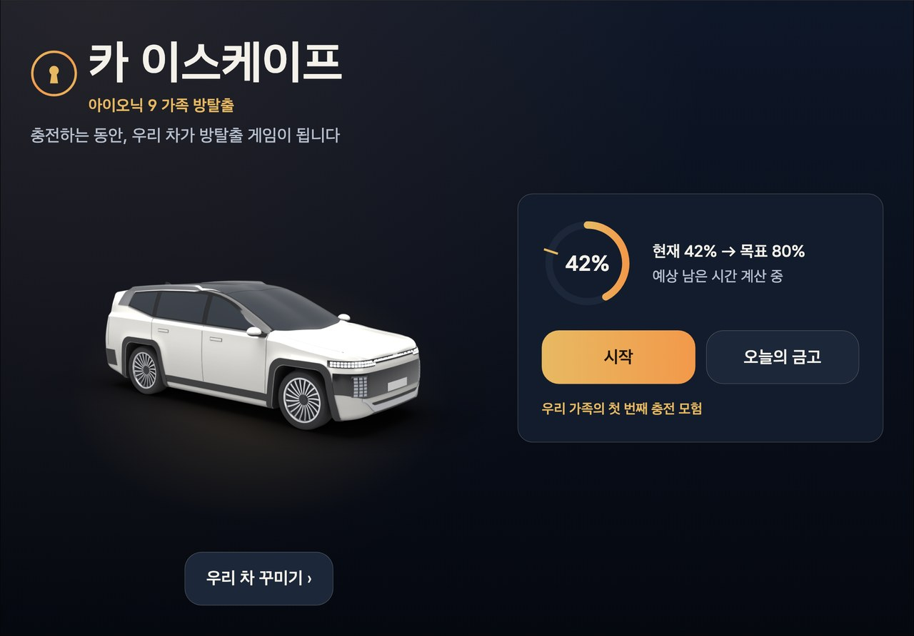
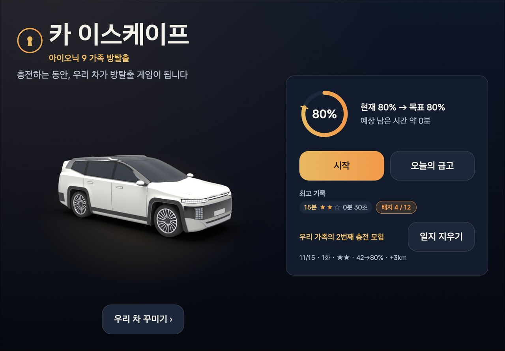
- 목적
- 충전 상태를 확인하고 바로 시작. 지난 기록으로 다시 올 이유를 보여 줌
- 구성 요소
- 앱 이름, 우리 차 그림(누르면 마이 차고), 충전 링(현재 → 목표, 예상 남은 시간), 시작, 오늘의 금고, 최고 기록과 배지, 가족 충전 일지(삭제 버튼 포함)
- 행동 → 다음
- 시작 → S02. 오늘의 금고 → S02(날짜를 시드로 같은 문제). 차 그림 → S09. 일지 지우기는 한 번 더 확인
- 차량 신호
- 배터리 SoC, 목표 충전량, 충전 중 여부. 충전구가 닫힘에서 열림으로 바뀌면 N화 준비 카드. 주행 뒤 P 에 두면 갈림길 카드(S10)
- 예외·복구
- SoC 를 아직 못 읽으면 남은 시간은 "계산 중". 주행 모드를 모르면 고정 테마. 목표 충전량을 차가 주지 않으면 기본 80%
- 상태
- 구현·테스트 에뮬레이터 검증 SoC 40, 한도 80 이 즉시 반영
화면별 설계
S02에피소드 매칭: 남은 충전 시간 안에 끝나는 화를 추천합니다
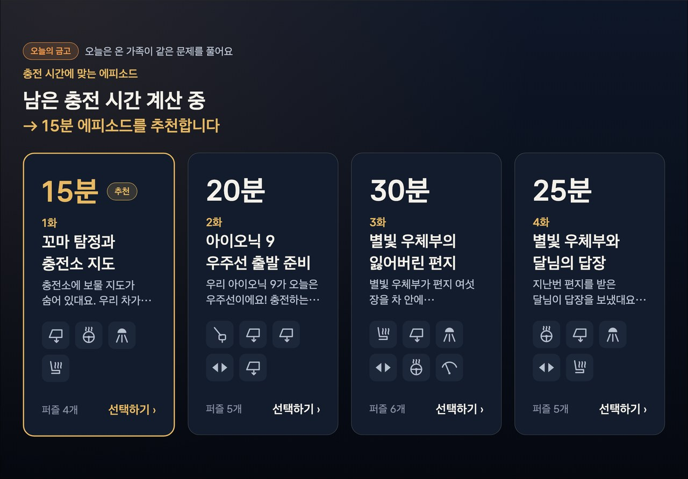
- 목적
- 충전이 끝나기 전에 마칠 수 있는 화를 고르게 함
- 구성 요소
- 추천 문구(남은 충전 시간 → N분 에피소드), 화 카드 4개(시간, N화, 제목, 소개, 쓰는 부품 아이콘, 퍼즐 수, 최고 기록), 오늘의 금고 표시
- 행동 → 다음
- 카드 선택 → S03. 추천이 아닌 화도 고를 수 있음
- 차량 신호
- SoC 를 5초 간격으로 모아 최근 10분 구간의 변화율(최소제곱)로 남은 시간을 추정. 차가 지원하는 입력 목록으로 퍼즐을 미리 바꿈
- 추천 규칙
- 남은 시간 안에 드는 가장 긴 화. 드는 화가 없거나 아직 모르면 가장 짧은 화(15분)
- 예외·복구
- 표본이 3개 미만이거나 90초 미만이면 "계산 중". 5분 동안 0.5% 미만으로 움직이면 멈춘 것으로 보고 추정하지 않음
- 상태
- 구현·테스트 에뮬레이터 검증 SoC 40 → 42 뒤 "약 34분 → 30분 에피소드 추천"
game/ChargeClock.kt, EscapeGame.recommend(), Episodes.kt06 / 18화면별 설계
S03인트로와 S05해제: 이야기는 짧게, 넘어가는 것은 자동으로
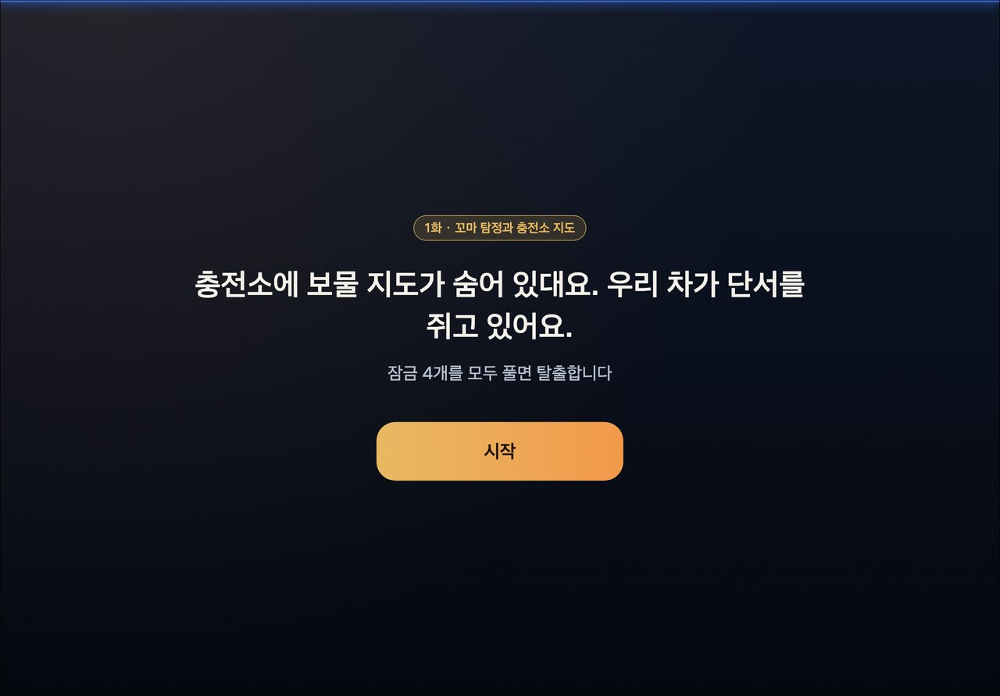
- 목적
- S03 은 이번 화의 이야기를 들려주고, S05 는 풀었다는 것을 확실히 알려 줌
- 구성 요소
- S03: N화 표시, 제목, 지난 화 한 줄(앞 화를 끝냈을 때만), 이야기, 계속. S05: 열린 자물쇠, 보상 문장
- 행동 → 다음
- S03: 계속 또는 5초 뒤 S04. S05: 3초 뒤 다음 S04 또는 S06. S05 에는 누를 것이 없음
- 차량 출력
- S03: 그 화의 색으로 무드등. S05: 초록 무드등, 정답 효과음. 이야기와 보상 문장은 음성으로도 읽음
- 예외·복구
- 무드등 쓰기가 실패해도 진행(화면 색만 바뀜). 문이 열리면 음성과 시간을 멈추고 S08
- 상태
- 구현·테스트 에뮬레이터 검증 무드등 앰버 적용 확인
EscapeGame.kt INTRO_MS 5초, RECAP_MS 4초, SOLVED_MS 3초07 / 18화면별 설계
S04퍼즐: 왼쪽은 지금 값, 오른쪽은 움직일 부품과 할 일
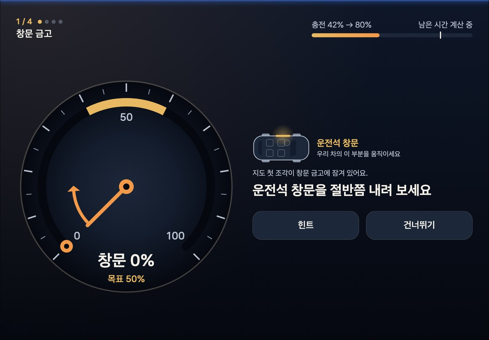
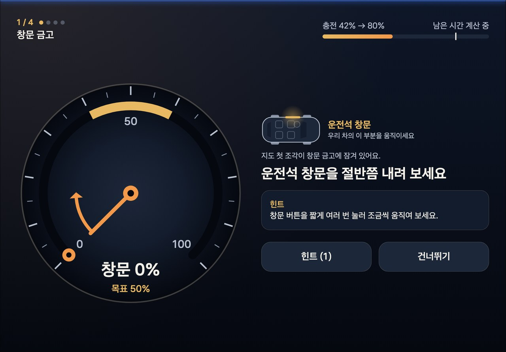
- 목적
- 움직일 차 부품, 지금 값, 목표를 한눈에 보여 줌
- 구성 요소
- 진행(1/4 와 점), 퍼즐 이름, 충전 바(현재 → 목표, 남은 시간), 퍼즐 그림, 부품 위치 그림, 이야기 한 줄, 지시문, 힌트, 건너뛰기, 번개 금고일 때 남은 시간 고리
- 행동 → 다음
- 차 부품 조작이 판정을 통과하면 S05. 힌트는 퍼즐마다 3단계까지. 건너뛰기 → S05(별점에서 감점)
- 차량 신호
- 퍼즐이 요구하는 입력 1~3종. 퍼즐을 시작한 순간의 상태가 기준선이라 이미 켜져 있던 것은 세지 않음
- 예외·복구
- 시작할 때 이미 정답 상태면 "한 번 움직였다가 다시 맞춰 보세요". 순서를 틀리면 오답 효과음 뒤 처음부터. 번개 시간이 지나도 퍼즐은 계속
- 상태
- 구현·테스트 에뮬레이터 검증 창문 50%, 1/3 지점 해제
game/Puzzles.kt PuzzleRun, ui/Screens.kt PuzzleScreen08 / 18화면별 설계
S04퍼즐 그림 9종과 차량 입력
| 그림 | 미션 | 차량 입력 | 통과 조건 | 상태 |
|---|---|---|---|---|
| 다이얼 | 창문 금고 | 창문 위치(운전석, 조수석, 2열) | 목표 30·50·70% 의 ±10% 안에서 2초 유지 | 운전석 검증 |
| 쌍둥이 | 쌍둥이 창문 | 운전석과 조수석 창문 | 둘 다 20~80% 안, 서로 10% 이내, 2초 유지 | 실기 미검증 |
| 모스 램프 | 독서등 등대 | 독서등 켜짐 | 0.6초 미만은 짧게, 이상은 길게. 2.5초 쉬면 처음부터 | 검증 |
| 화살표 순서 | 깜빡이 암호 | 방향지시등 | 왼쪽·오른쪽 순서가 일치. 틀리면 처음부터 | 검증 |
| 기억 | 기억 금고 | 방향지시등 | 순서를 8초 + 개수 x 0.7초 보여 준 뒤 숨김. 보여 주는 동안의 입력은 세지 않음 | 테스트 |
| 단계 게이지 | 따뜻한 핸들·의자 | 핸들 열선, 운전석 시트 열선 | 목표 단계에서 1.5초 유지. 목표는 차가 알려 준 최대 단계 이내 | 검증 |
| 수수께끼 | 수수께끼 금고 | 창문, 열선, 와이퍼 중 하나 | 덧셈·뺄셈의 답만큼 조작. 창문은 10칸 중 그 칸만 인정 | 테스트 |
| 연쇄 칩 | 연쇄 금고, 릴레이 창문 | 서로 다른 부품 2~3단계 | 정해진 순서로 한 단계씩. 와이퍼 단계는 넣지 않음 | 테스트 |
| 좌석 지도 | 찰칵 | 앞좌석 안전벨트 | 풀었다가 다시 채운 것만 인정. 릴레이는 운전석에서 조수석 순서 | 실기 미검증 |
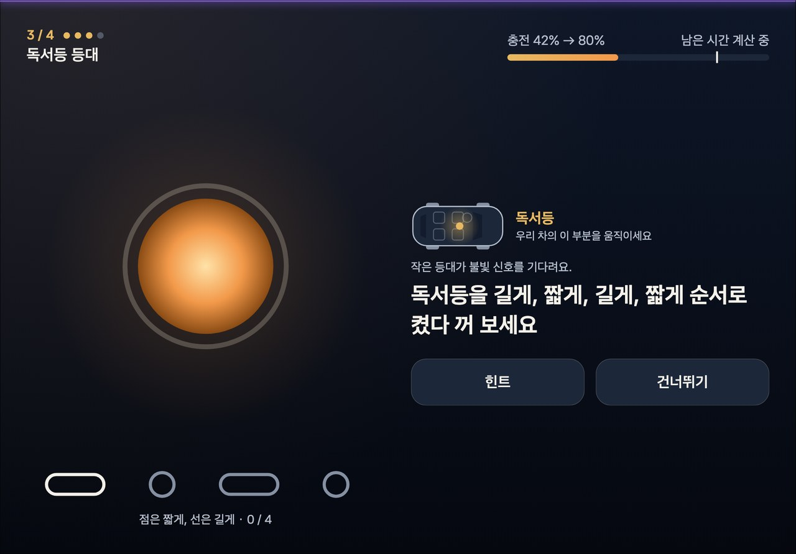
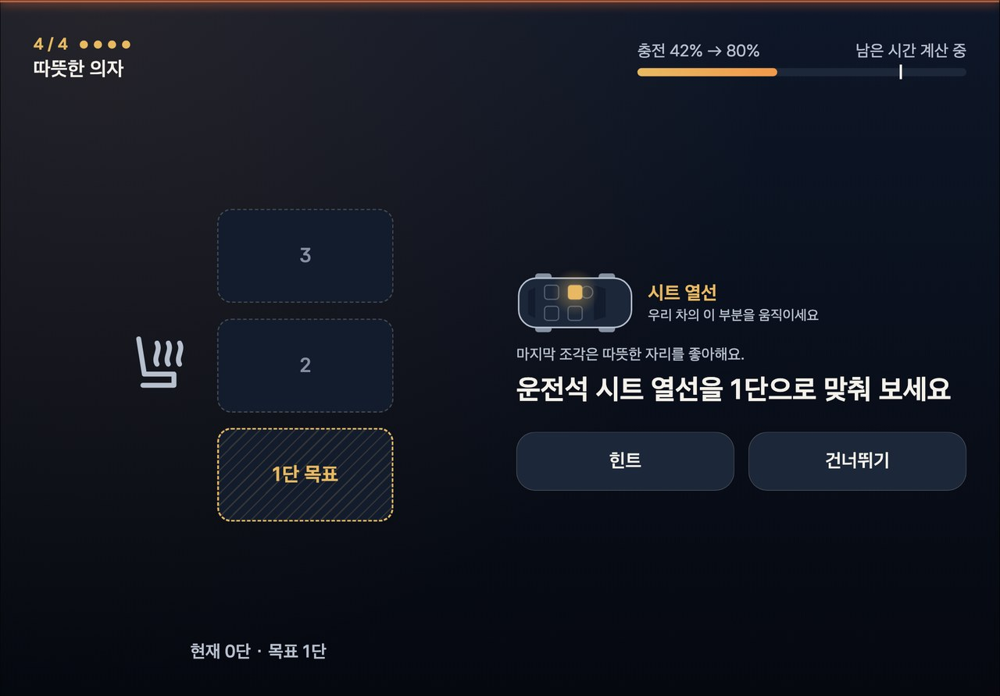
화면별 설계
S06엔딩: 목표 충전량에 닿는 순간 열리고, 원래대로 출발로 끝납니다
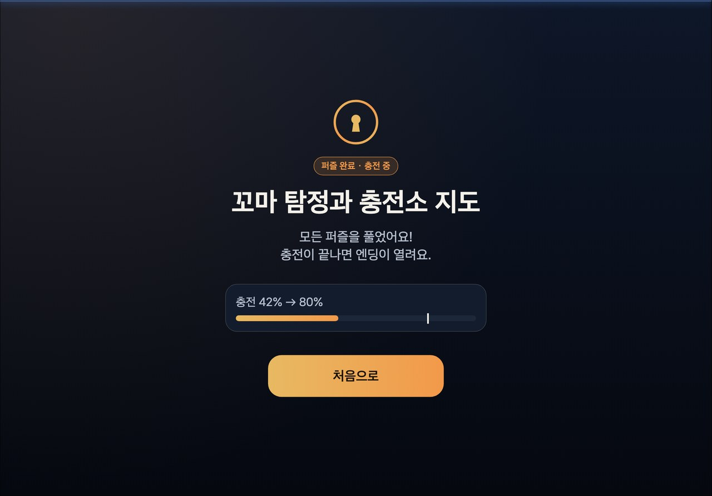
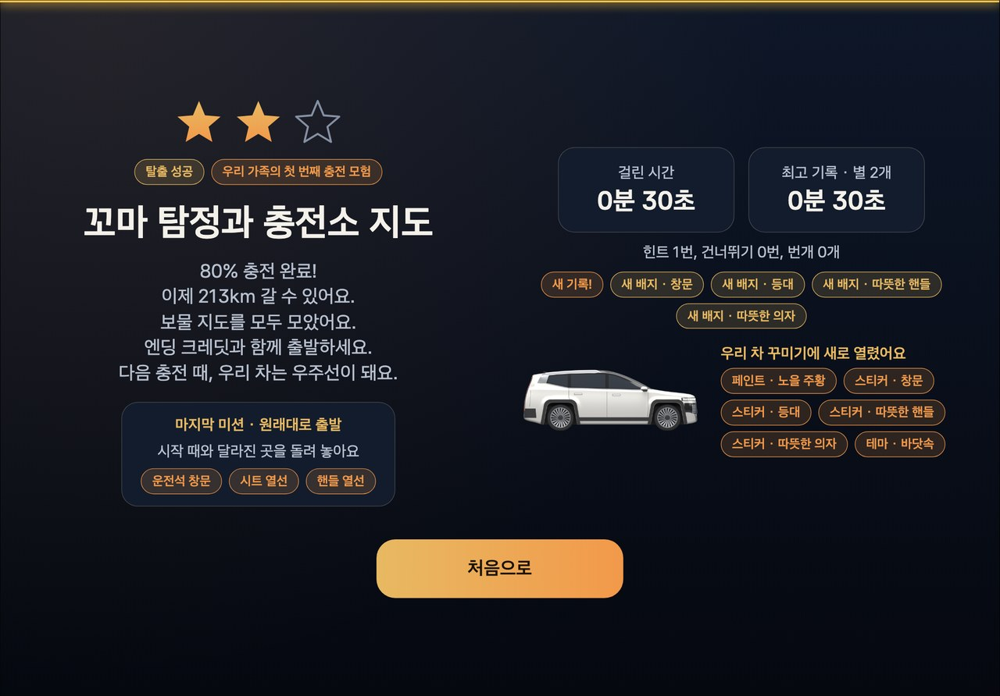
- 목적
- 게임의 끝을 충전의 끝에 맞추고, 차를 시작 때 상태로 돌려 놓게 안내
- 구성 요소
- 별 1~3개, 엔딩 문장(충전량, 주행 가능 거리, 다음 화 예고), 원래대로 출발 목록, 걸린 시간, 최고 기록, 새 배지, 마이 차고에 새로 열린 것, 처음으로
- 행동 → 다음
- 처음으로 → S01. 목록의 부품을 사용자가 직접 돌려 놓으면 목록에서 사라지고, 다 사라지면 "출발 준비 완료"
- 차량 신호
- SoC, 목표 충전량, 충전 중 여부, 주행 가능 거리. 시작 때와 창문이 5% 넘게 다르거나 열선, 독서등, 와이퍼가 달라졌는지 비교
- 별점
- 힌트 0, 건너뛰기 0 이면 3개. 건너뛰기 0 이고 힌트가 퍼즐 수 이하면 2개. 그 밖은 1개
- 예외·복구
- 충전이 먼저 끝나면 남은 퍼즐을 알려 주는 보너스 엔딩. 충전이 멈추면 "충전이 멈췄어요" 엔딩. 낮고 넓은 창에서는 내용이 스크롤되고 처음으로는 항상 화면에 남음
- 상태
- 구현·테스트 에뮬레이터 검증 SoC 80% 도달 엔딩
주행·정차 상태별 동작
S07주행 정지: 게임은 정차 중에만, 판단은 세 겹으로 합니다
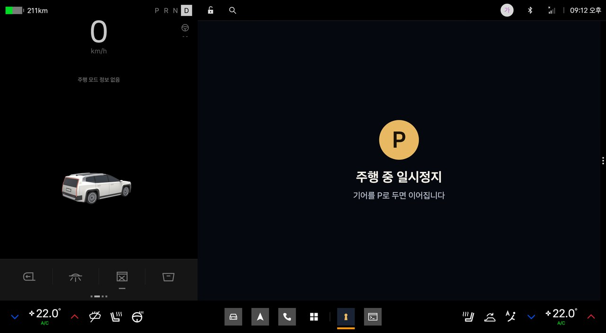
| 상황 | 앱 동작 | 상태 |
|---|---|---|
| 차단 조건 | 주행 제한(CarUxRestrictions) 이거나 기어가 P 가 아니거나 속도가 0.5km/h 초과 | 테스트 |
| 차단 즉시 | 음성 중단, 화면 전체를 정지 안내로 덮고 터치 차단, 무드등 원복, 경과 시간 정지 | 기어 D 검증 |
| P 복귀 | 직전 화면으로 돌아가고 퍼즐 기준선을 새로 잡음. 주행 중에 켠 방향지시등은 정답으로 세지 않음 | 검증 |
| 기어를 모를 때 | 막힌 것으로 봄. 기어를 끝내 알려 주지 않는 차에서는 정지 화면에 머묾 | 테스트 |
| 주행 중 충전기 분리 | 엔딩을 띄우지 않고 정지만 유지. P 로 돌아온 뒤 60초 안에 다시 꽂으면 이어서 진행 | 테스트 |
| 시스템 쪽 차단 | distractionOptimized 를 선언하지 않아 주행 중에는 시스템이 앱을 가림 | 검증 |
| 앱이 뒤로 감 | 진행, 소리, 무드등을 모두 멈추고 되돌림(onStop) | 구현 |
| 속도만으로 차단 | 코드에 있으나 에뮬레이터에서 속도만 바꿔 확인하지는 않음 | 실기 미검증 |
vehicle/DriveGuard.kt, game/Sim.kt gated(), app/AndroidManifest.xml, docs/pleos/driving-restriction-development-guide.txt11 / 18주행·정차 상태별 동작
S08문 열림 정지: 문은 "잠깐 기다려"만 뜻합니다
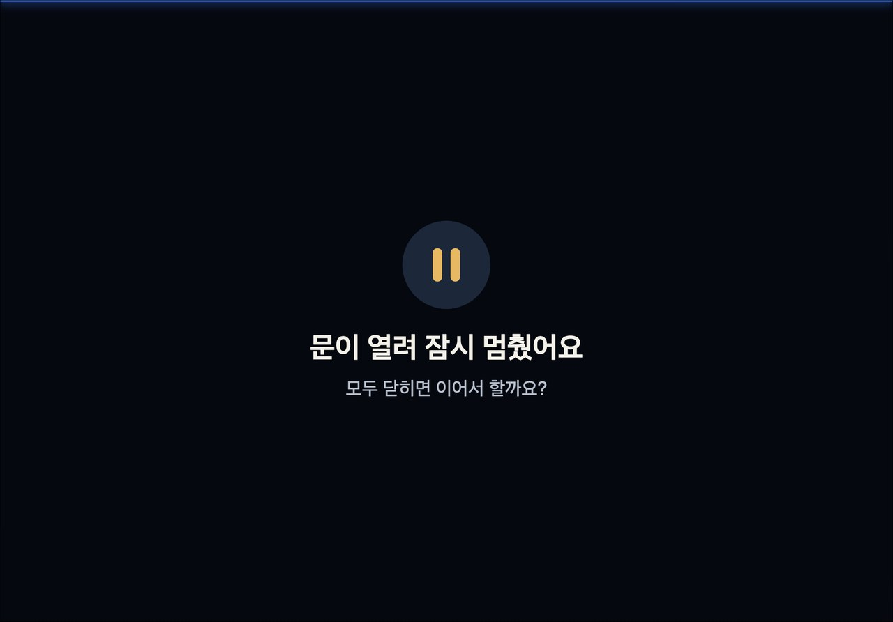
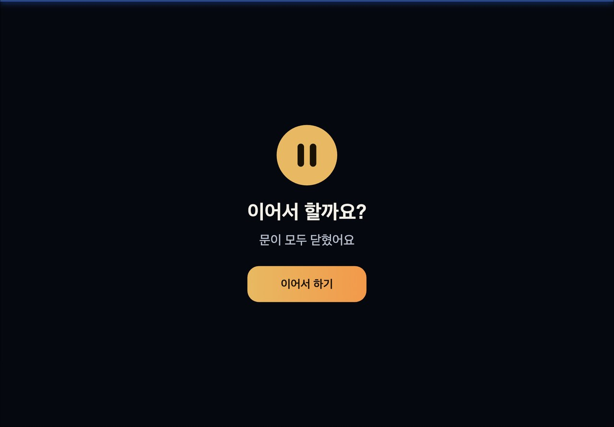
- 목적
- 타고 내리는 동안 음성과 번개 시간이 흐르지 않게 함
- 진입
- 인트로, 퍼즐, 해제 중 실내 문 가운데 하나라도 열림. 타이틀과 엔딩에서는 멈추지 않음
- 구성 요소
- 문 그림, 안내 문장, 문이 모두 닫힌 뒤에만 나타나는 이어서 하기
- 행동 → 다음
- 이어서 하기 → 멈췄던 화면. 퍼즐이면 기준선을 새로 잡아, 내리면서 건드린 스위치는 세지 않음
- 차량 신호
- 문 위치(
Door.registerDoorPosition). 누가 내렸는지, 어디 앉았는지는 추정하지 않음 - 예외·복구
- 문 신호가 없는 차에서는 이 화면이 뜨지 않고 게임은 그대로 진행. 닫힌 직후 "이어서 할까요?" 를 음성으로 한 번 물음
- 상태
- 구현·테스트 문 열림·닫힘 신호 수신 검증
EscapeGame.kt PAUSED_DOOR, resumeAfterDoor()12 / 18화면별 설계
S09마이 차고와 S10출발 금고
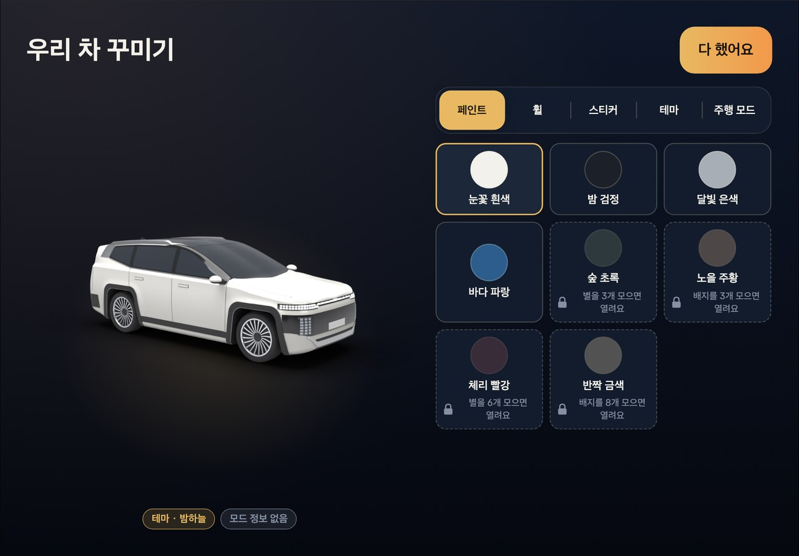
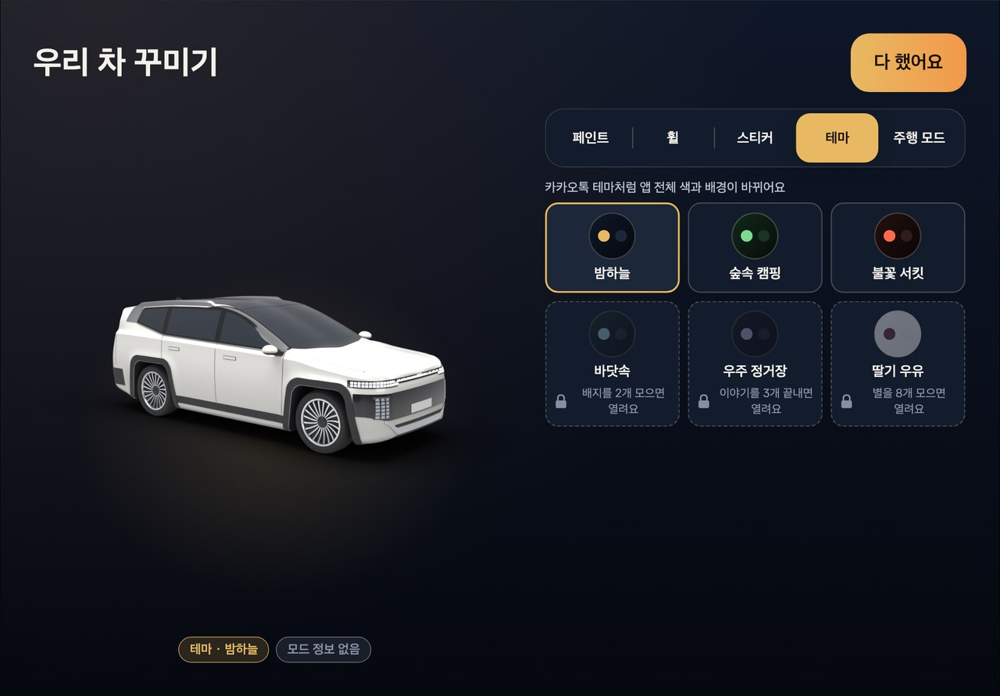
- 목적
- 모은 별과 배지로 우리 차와 앱 테마를 꾸밈
- 구성 요소
- 도색 8, 휠 4, 미션 배지 스티커 12(붙이는 자리 3), 테마 6, 주행 모드별 테마와 무드등 미리 켜 보기
- 차량 신호
- 주행 모드(읽기만). 무드등 미리 보기는 P 에서만 켜지고 차고를 나가면 원복
- 상태
- 구현·테스트 주행 모드 실기 미검증
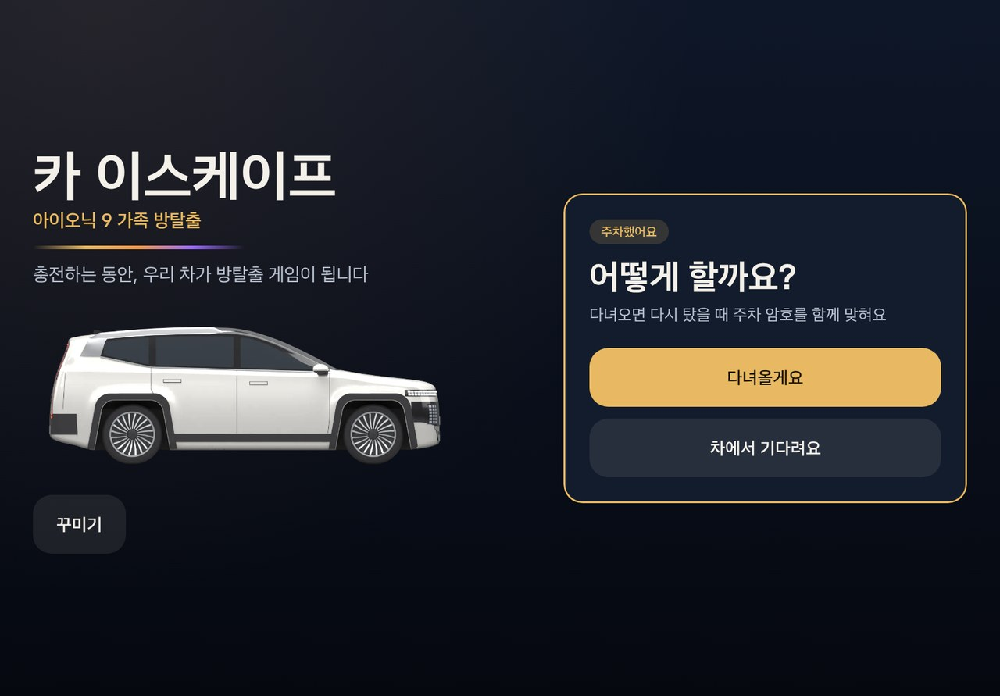
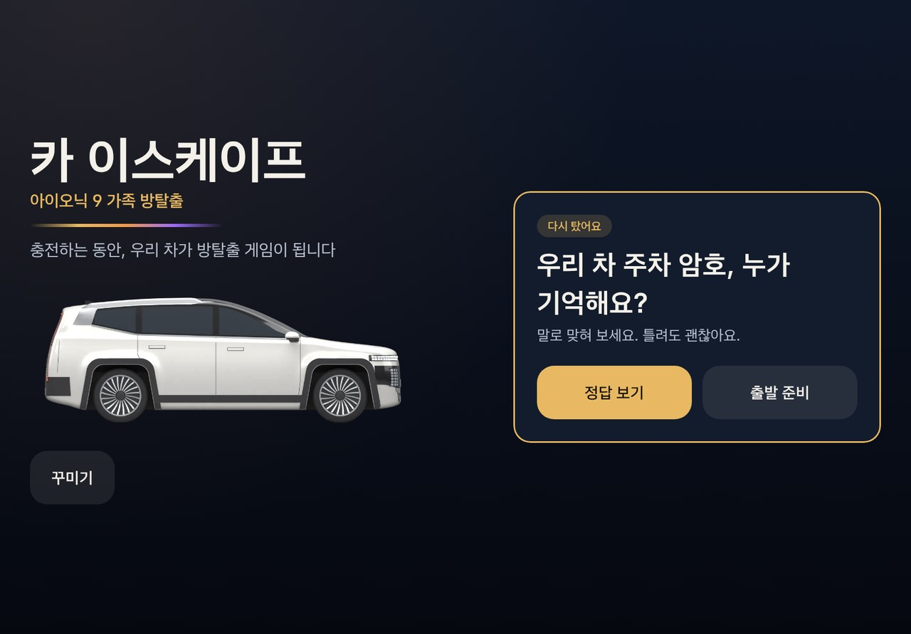
- 목적
- 차를 두고 다녀올 때 보호자가 기둥 번호를 남기고, 돌아와서 가족이 맞혀 봄
- 흐름
- 주행 뒤 P → 갈림길 → 다녀올게요 → 층·구역·번호 입력 → 확인 → 저장. 문 잠금 뒤 다시 타면 "다시 탔어요" → 정답 보기(떠난 사이 충전량과 주행 가능 거리)
- 차량 신호
- 기어, 문 잠금, 문 위치, SoC, 주행 가능 거리. 위치 좌표는 쓰지 않고 사람이 누른 값만 저장
- 예외·복구
- 앱을 다시 켜도 카드 복구. 출발(D 또는 주행 제한)하면 암호 삭제. 문 잠금 신호가 없는 차는 타이틀의 보관 중 칩으로 직접 엶
- 상태
- 구현·테스트 에뮬레이터 검증 웹 체험판에는 없음
ui/Garage.kt, game/Customization.kt, ui/Parking.kt, game/Parking.kt13 / 18화면 규격 12종 대응
공식 앱 창 크기 12종에 같은 규칙 세 가지로 맞춥니다
| 디스플레이 | dpi | 분할 창(1:1), dp | 단독 창, dp | 레이아웃 |
|---|---|---|---|---|
| Connect-S 17형 2560x1440 | 160 | 840 x 1184 | 1700 x 1184 | 기준 |
| Connect-S 14.6형 2048x1152 | 200 | 672 x 948 | 1360 x 948 | 축소 |
| Connect-S 12.9형 1920x1080 | 160 | 628 x 855 | 1274 x 855 | 축소 |
| Connect-WS 24.6형 3840x850 | 160 | 800 x 810 | 1640 x 810 | 단독은 컴팩트 |
| Connect-WE 24.6형 3840x1440 | 160 | 800 x 1400 | 1640 x 1400 | 축소 |
| Connect-WF 18.7형 3072x816 | 200 | 648 x 800 | 1256 x 800 | 축소 |
값의 출처: Pleos Connect Emulator v2.1.0 내장 폼팩터 콘솔의 "테스트 화면 크기" 표시값을 2026-10-23 에 읽음(docs/pleos/form-factor-official-dp.md). 17형 단독 창의 실제 실행 크기는 1682 x 1210 으로 측정됐습니다(창 바 포함 여부 차이).
| 규칙 | 내용 |
|---|---|
| 방향 | 폭이 높이보다 크면 가로: 퍼즐 그림 왼쪽, 지시문 오른쪽. 아니면 세로: 위아래로 쌓음 |
| 배율 | 17형 창(가로 1680, 세로 1184dp)을 1로 두고 폭 비율과 높이 비율 중 작은 값. 0.34~1.2 로 제한 |
| 컴팩트 | 폭이 높이의 1.8배를 넘는 가로 창은 높이 760dp 기준으로 배율을 잡고 헤더를 한 줄로, 장식을 생략 |
| 글자 하한 | 배율이 작아져도 16sp 아래로 내려가지 않음(200dpi 에서 20px) |
| 터치 하한 | 버튼 높이 100dp x 배율, 최소 76dp |
| 창 전환 | 분할, 단독 전환과 회전에도 게임 상태는 ViewModel 에 남음 |
구현·테스트 46개 화면 상태를 12종 크기로 찍은 스냅샷 552장과 크기 견본 12장을 기록본과 비교합니다. 에뮬레이터 검증 은 17형 단독 창에서만 했습니다.
ui/Kit.kt Scaled, Dims · ui/src/test/java/com/carescape/ui/PleosScreens.kt14 / 18화면 규격 12종 대응
같은 퍼즐 화면을 12종 앱 창에서 캡처
웹 체험판의 화면 선택(주소 옵션 ?screen=)으로 뜬 창문 금고 화면입니다. 웹과 Android 는 같은 dp 값과 같은 배율 규칙을 씁니다.
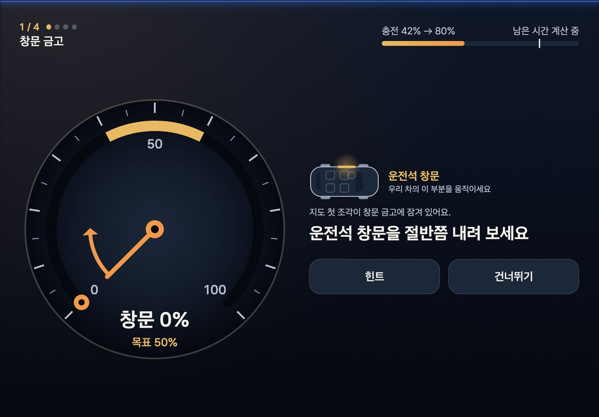
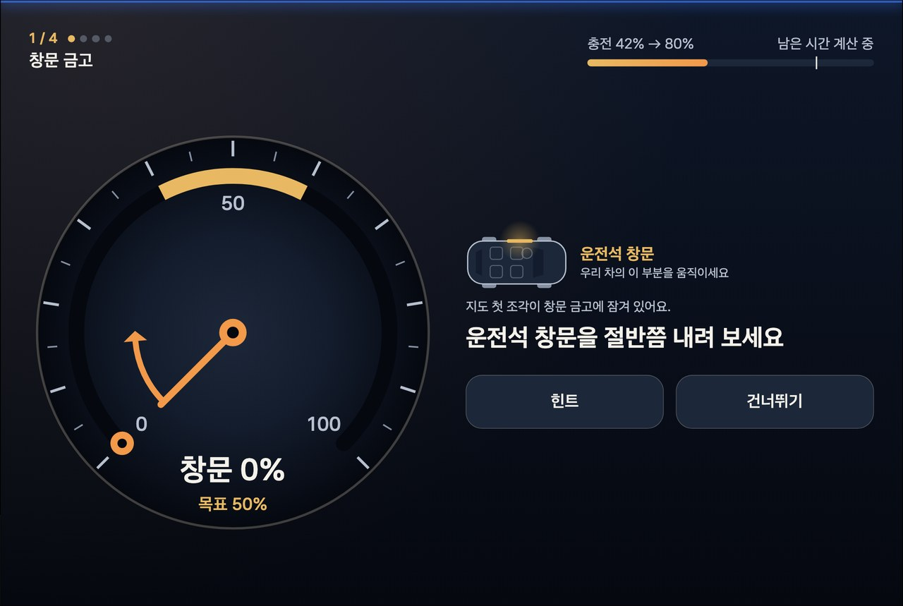
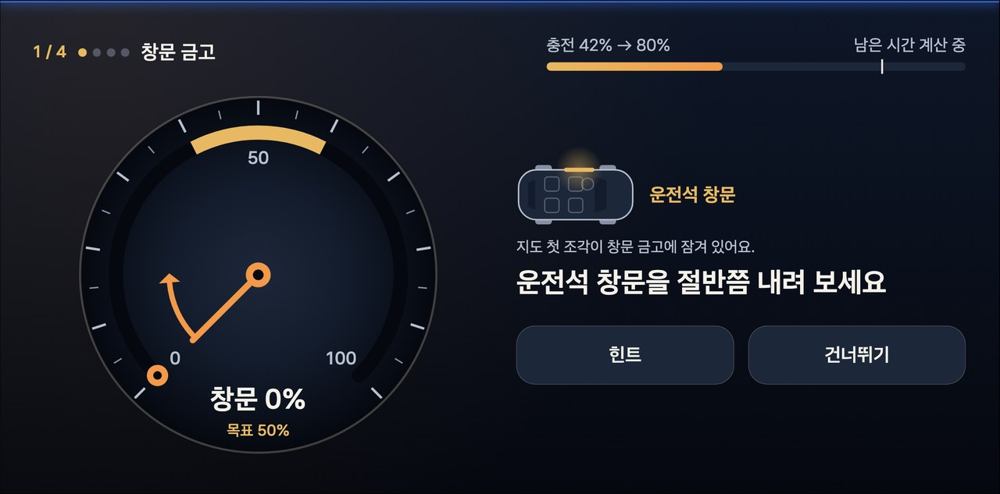
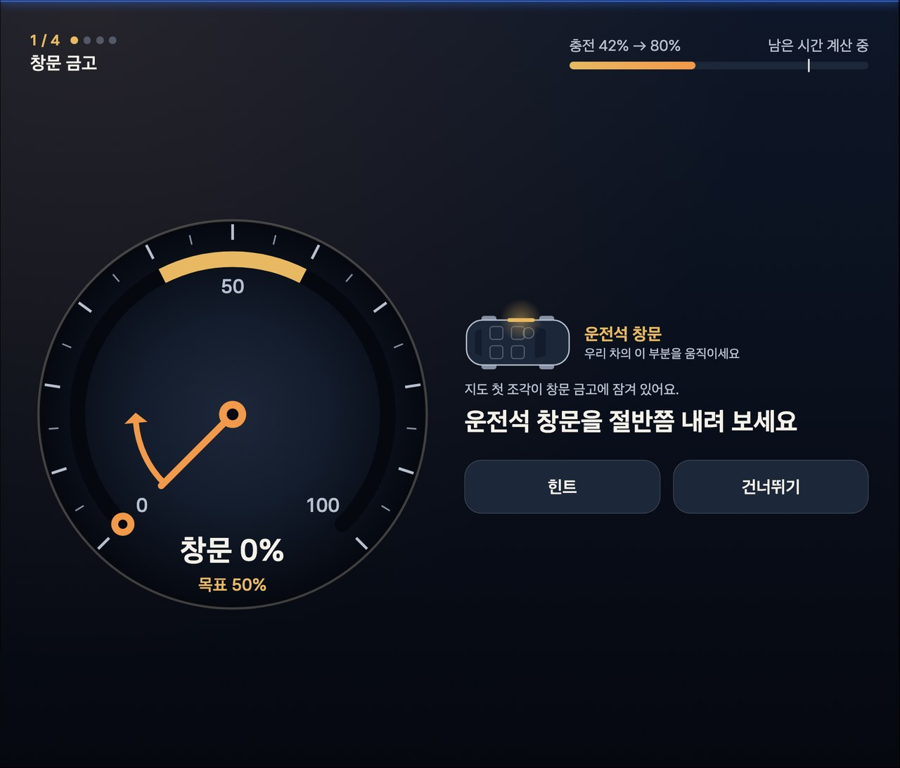
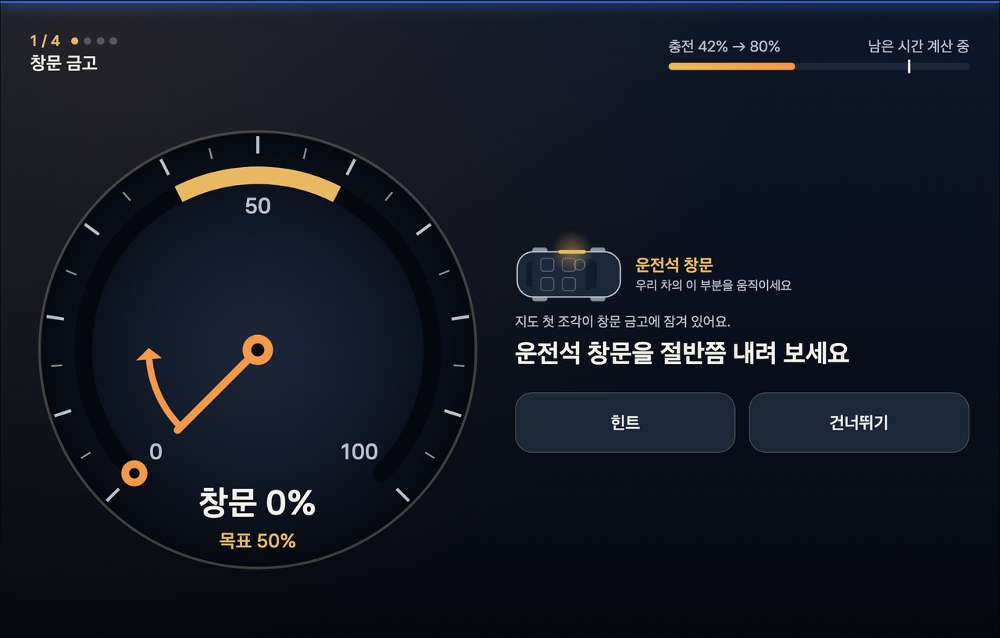
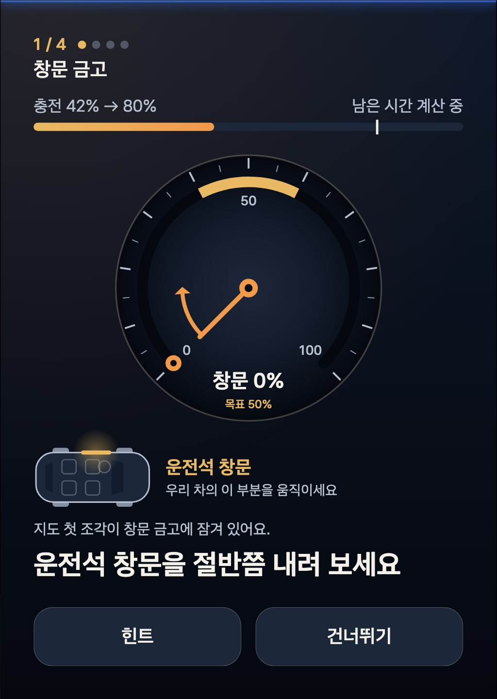
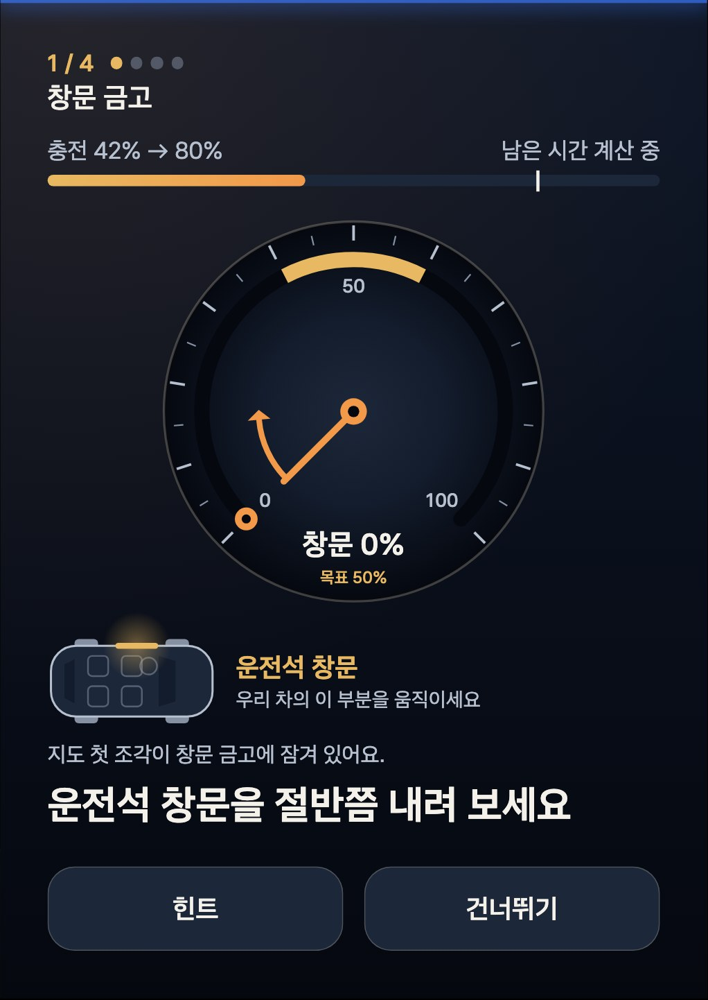
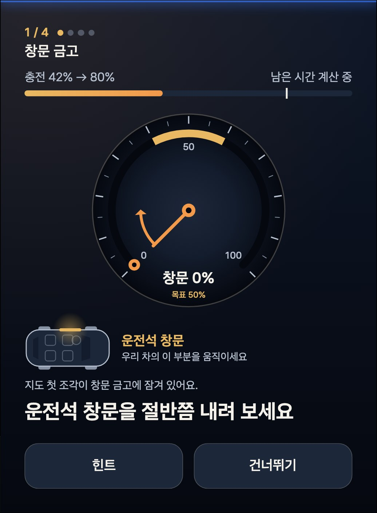
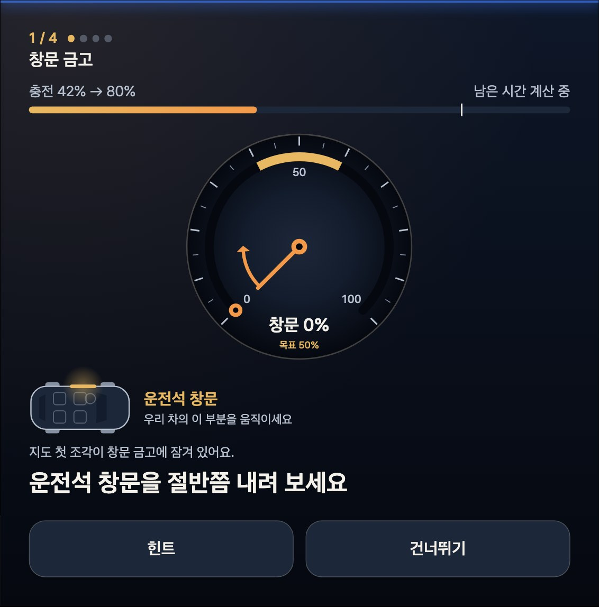
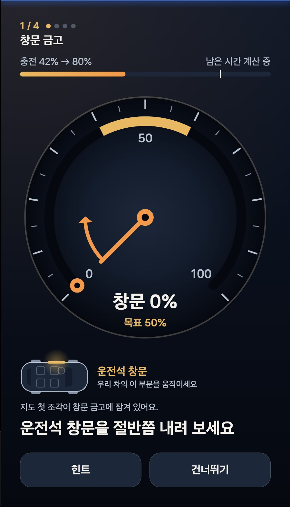
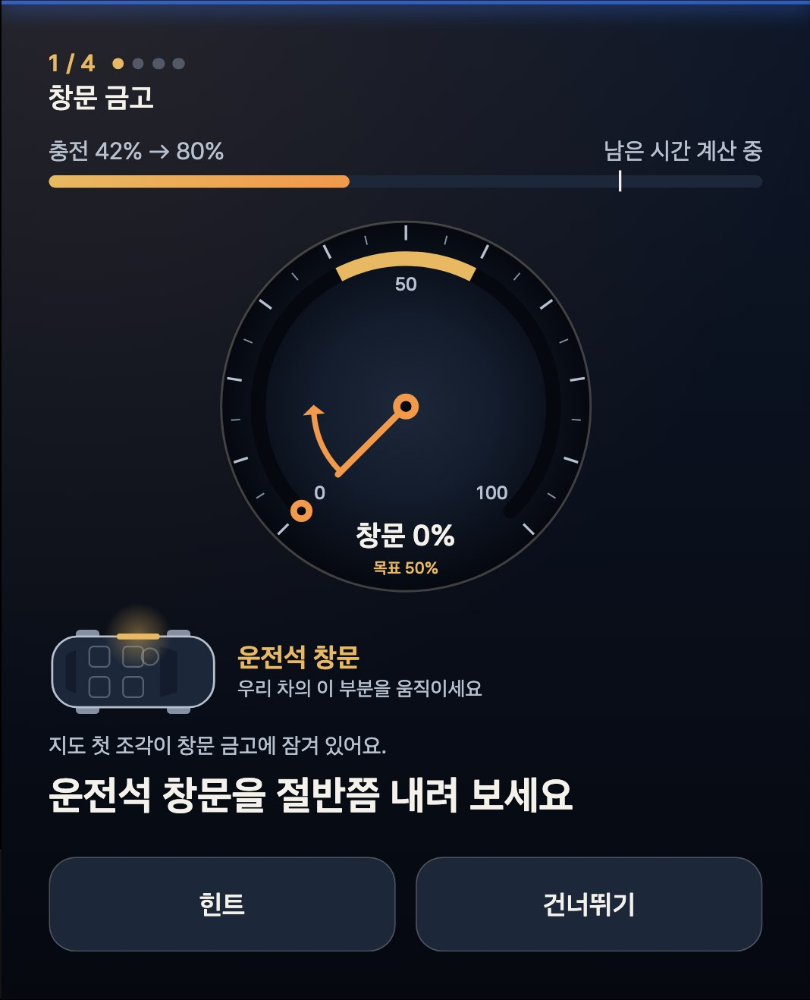
ui/src/test/snapshots/images/ 에 있습니다.15 / 18컴포넌트·타이포·색 토큰
글자와 대비는 Pleos 기준 이상으로, 색은 테마 묶음으로 관리합니다
색 토큰: 기본 테마 "밤하늘"
대비는 가장 밝은 면인 Surface2 위에서 계산한 최솟값입니다. 금색 버튼 위 글자(#1A1305)는 10.1:1.
타이포
| 쓰임 | 크기(17형 기준) |
|---|---|
| 화면 제목 | 40sp |
| 본문, 버튼 글자 | 26~30sp |
| 보조 문장, 알약 표시 | 22~24sp |
| 하한(배율이 작을 때) | 16sp |
서체는 Pleos 디자인 가이드가 지정한 Asta Sans 를 앱에 내장했습니다(OFL). 한국어 줄바꿈은 어절 단위입니다.
컴포넌트
- 버튼: 높이 100dp, 모서리 32, 글자 30sp. 채움(강조색)과 기본(글자색 9% 면) 두 가지. 비활성은 선과 32% 글자
- 카드: 모서리 32, 1dp 선. 고른 카드는 3dp 강조색 선
- 알약 표시: 추천, 새 기록, 새 배지(누를 수 없음)
- 탭: 높이 100dp 받침에 고른 칸만 채움
- 부품 위치 그림: 위에서 본 차에 움직일 곳을 표시
Pleos 기준과 비교
| 항목 | Pleos 가이드 | 카 이스케이프 |
|---|---|---|
| 대비 | 4.5:1 이상 | 글자 색 전부 4.7:1 이상. 테마 6종 모두 자동 검사 |
| 최소 글자 | 12sp, 실제 높이 18px 이상 | 16sp 이상 |
| 서체 | Asta Sans | Asta Sans 내장 |
| 기본 버튼 | L 높이 100dp, 모서리 32 | 같은 값 x 배율, 최소 76dp |
| 시스템 화면 모드 | 자동, 라이트, 다크 | 앱 자체 테마 6종(어두운 5, 밝은 1). 웹 체험판은 라이트에서 테마별 밝은 색으로 바뀜(글자 대비 4.5:1 검사). Android 앱 연동은 계획 |
테마 6종: 밤하늘, 숲속 캠핑, 불꽃 서킷, 바닷속, 우주 정거장, 딸기 우유. 주행 모드를 따라가게 하면 에코는 숲, 스포츠는 불꽃, 노멀은 밤하늘입니다.
ui/Kit.kt Palette, Dims · docs/pleos/components/spec.md, design-intro.txt, typography.txt · 대비 검사 web/selftest.mjs16 / 18접근성·안전 설계
아이가 조작해도 안전하도록 상한을 코드에 넣었습니다
| 위험 | 설계 | 근거 |
|---|---|---|
| 주행 중 주의 분산 | 세 겹 차단(S07). 주행 중에는 음성도 내지 않음 | DriveGuard.kt |
| 2열 창문을 아이 혼자 조작 | 2열 창문 목표는 절반 이하. 창문 잠금이 켜져 있으면 앞좌석 창문 미션으로 바꿈 | Puzzles.kt reroll, substitute |
| 창문 완전 개방 | 목표는 30·50·70% 뿐. 쌍둥이 창문은 20~80% 안 | Puzzles.kt |
| 마른 유리 와이퍼 마모 | 목표 최대 3회. 다시 시도까지 합쳐 퍼즐 하나에 6회면 다음으로 넘어감. 연쇄 금고에는 와이퍼를 넣지 않음 | WIPE_CAP |
| 카시트를 고정한 뒷좌석 벨트 | 벨트 미션은 앞좌석만 | FRONT |
| 충전소에서 깜빡이, 와이퍼 | 1화는 방향지시등과 와이퍼를 쓰지 않음(변형과 대체로도 넣지 않음) | Episodes.kt avoid |
| 무드등이 바뀐 채 남음 | 시작 전 값을 저장하고 종료, 주행, 앱 이탈 때 원복. 원래 값 세 가지를 모두 읽은 영역만 바꿈 | PleosVehicleGateway.kt |
| 열선, 창문을 켜 둔 채 출발 | 엔딩의 원래대로 출발 목록과 음성 안내 | EscapeGame.kt restoreLeft |
접근성
- 이야기, 지시, 힌트, 보상을 음성(TTS)으로 함께 읽어 글을 못 읽는 아이도 참여
- 정답은 색(초록 무드등)만이 아니라 효과음, 음성, 화면 문장으로 함께 알림
- 방향은 화살표 그림과 "다음: 왼쪽" 글자를 함께 표시
- 움직일 부품은 이름과 위에서 본 차의 위치 그림으로 함께 표시
- 글자 16sp 이상, 터치 76dp 이상, 대비 4.5:1 이상
- 힌트는 3단계. 마지막 단계는 답에 가까운 안내
- 시간 제한(번개)은 실패가 없고 배지만 걸려 있음
계획 화면 낭독기(TalkBack) 점검, 색각 이상 시뮬레이션 점검, Pleos TextToSpeech SDK 로의 전환은 아직 하지 않았습니다. 지금 음성은 Android 표준 TextToSpeech 입니다.
상태 목록
로딩, 빈 상태, 오류, 충전 중단을 화면마다 정해 두었습니다
| 종류 | 상황 | 화면에 보이는 것 | 복구 |
|---|---|---|---|
| 로딩 | 남은 충전 시간을 아직 모름 | "예상 남은 시간 계산 중", 15분 화 추천 | 표본이 모이면 자동 갱신 |
| 기어를 아직 못 읽음 | S07 정지 안내 | 첫 기어 값이 오면 해제 | |
| 빈 상태 | 기록, 배지, 일지 없음 | 그 영역을 그리지 않음. "우리 가족의 첫 번째 충전 모험" | 한 화를 끝내면 생김 |
| 주행 모드를 모름 | 고정 테마, 차고에 "모름" 표시 | 값이 오면 모드 따라가기 적용 | |
| 주행 가능 거리 없음 | 거리 문장만 빠짐 | 없음(선택 정보) | |
| 오류 | 차에 없는 부품 | 오류 없이 다른 퍼즐로 대체 | 시작할 때 capability 로 판단 |
| 차량 서비스 연결 실패 | 값이 올 때까지 기본 화면, 기어 미확인이면 S07 | capability 조회를 다시 시도 | |
| 런타임 권한 거부(속도, 충전) | 속도 없이 기어와 주행 제한으로 판단, 충전 목표는 기본 80% | 허용하면 다시 구독 | |
| 음성 엔진 초기화 실패 | 화면 문장만으로 진행 | 없음(로그만 남김) | |
| 충전 중단 | 퍼즐을 다 푼 뒤 충전이 멈춤 | "충전이 멈췄어요" 엔딩과 현재 충전량 | 다음 충전 때 다음 화 |
| 퍼즐 중 충전이 먼저 끝남 | 보너스 엔딩과 남은 퍼즐 이름 | 그 화는 다음 충전 때 다시 | |
| 자리를 옮기느라 잠깐 뽑음 | 주행 정지 뒤 60초 유예 | 다시 꽂으면 이어서 |
이 문서의 화면을 다시 뜨는 법
차 그림이나 화면틀이 바뀌면 아래 한 줄로 이미지를 모두 새로 뜹니다.
python3 submission/tools/capture_screens.py
PDF 는 submission/tools/build_pdfs.sh 로 다시 만듭니다.
확인한 날짜
- 게임 로직 테스트 90건 통과: 2026-11-15 재실행
- 웹 체험판 대조 검사 41건 통과: 2026-11-15 재실행
- 화면 스냅샷 564장과 UI 테스트 566건: 2026-10-27 실행 기록, 2026-11-15 검증 명령 성공
- 에뮬레이터 실기 검증: 2026-10-23, 10-25 프로젝트 기록
실차 검증은 하지 않았습니다. 상세는 근거와 구현 범위 문서를 봐 주세요.